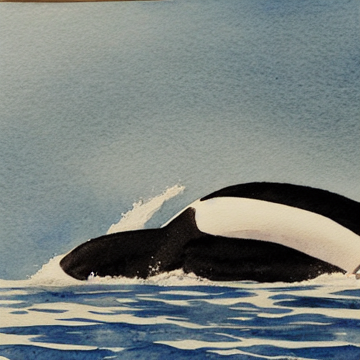
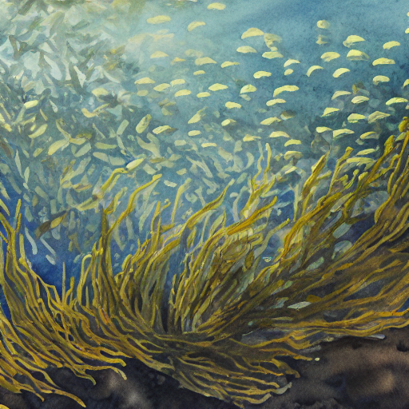
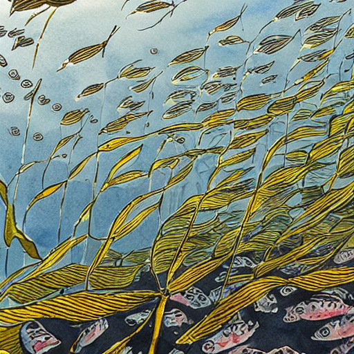
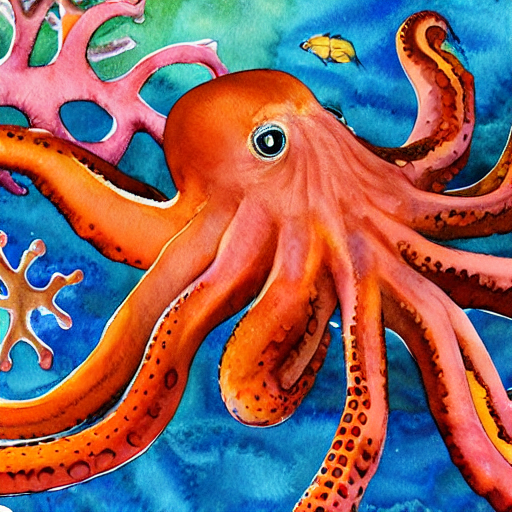
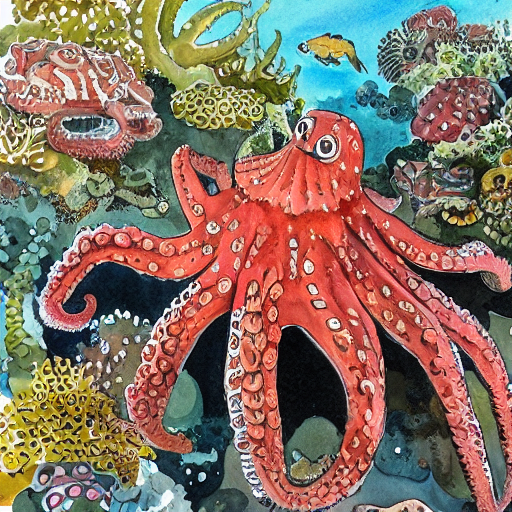

1. Direct A/B Comparison — Same Prompt, LoRA On vs Off
Same seed, same prompt content. Left = base SD 1.5 (no LoRA). Right = LoRA applied with brionypenn trigger.
Orca breaching

No LoRA "watercolor painting of an orca whale breaching"

LoRA "brionypenn watercolor painting of an orca whale breaching, soft edges, natural pigment"
Herring schooling in kelp

No LoRA "watercolor painting of herring schooling underwater, kelp forest"

LoRA "brionypenn watercolor painting of herring schooling underwater, kelp forest, soft edges"
Giant pacific octopus

No LoRA "watercolor painting of a giant pacific octopus in a coral reef"

LoRA "brionypenn watercolor painting of a giant pacific octopus in a coral reef, vibrant colors"